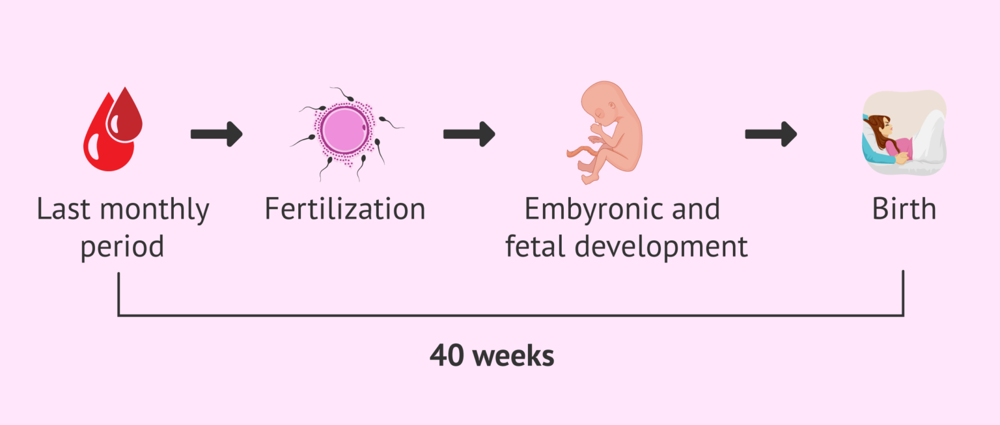
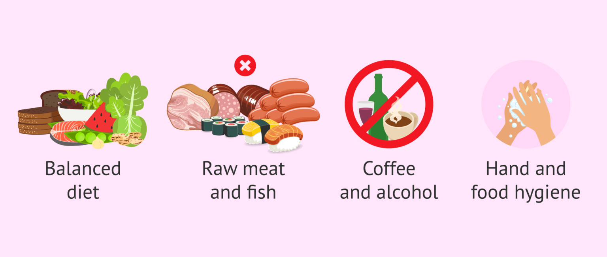

Pregnancy is a long process that lasts about 40 weeks. Throughout the process, both the pregnant woman and the fetus go through a series of major changes. Before examining the details of the first month of pregnancy week by week, it should be noted that gynecologists and all professionals from the field of assisted human reproduction start counting the weeks of pregnancy with the date of the last menstrual period (LMP).
This is because it is sometimes difficult for a woman to know the exact time of fertilization. However, a woman usually does know when her last menstrual period was. Therefore, the "first day of pregnancy" is considered to coincide with the date of the last menstrual period in a 40-week gestation.
However, it should be noted that some do consider that week 1 of pregnancy begins when the fertilization of the egg occurs after sexual intercourse, and the existence of the embryo. Throughout this article we will discuss the weeks of pregnancy as it is usually done by specialists in reproduction and obstetrics, considering the first week of pregnancy from the date of the last menstrual period (LMP).
Pregnant women need to have a very complete diet that covers all the vitamin and mineral requirements, since the nutrition of the fetus will depend entirely on them, as well as the supply of oxygen.
In particular, pregnant women should start paying attention to the following foods and nutritional intake:
The following sample menu includes a variety of folate-rich foods, such as avocado, spinach, sweet potato, and quinoa. It also includes lean proteins like chicken and salmon, essential for foetal development. Additionally, the snacks provide a healthy dose of fibre and vitamins. Remember to speak to your healthcare provider before making any major dietary changes during pregnancy. You can follow this chart or a similar one to curate in your 1st month pregnancy diet.
Sudden changes of mood, oversensitivity, and irritability are very common among pregnant women due to the drastic impact of hormonal changes as well as every process that is developing within you.
Moreover, such hormone adjustments may cause you to feel nausea and sickness due to increased levels of beta-hCG from week 5 onwards.
You are likely to notice a slight increase weight gain, along with a series of discomforts that occur from the uterus expanding, including abdominal and leg cramps, heartburn, sciatic nerve pain, strong urge to pee, constipation, etc. Also, an increase in maternal plasma volume occurs in order to nourish the unborn baby.
It is still too early to notice these body changes at a glance. Usually, your stomach starts to get bigger from the third month of pregnancy and continues to do so up until childbirth.
On the other hand, the cervix usually becomes softer. This is the reason why having a mild spotting after intercourse is normal.
Exhaustion is another symptom that you may notice from the second month of pregnancy onwards. During the first trimester of pregnancy many women feel a continuous need for sleep as well as exhausted and drained all the time
Pregnancy also affects the sense of taste (dysgeusia). Therefore it is likely that your meal preferences change and you have an increased or decreased appetite.
Moreover, you may experience an increase in breast growth, something that may be painful. You may begin to notice small nodules or pimples around your areola known as Montgomery tubercles.
Soon as your doctor starts monitoring your pregnancy, he or she will recommend that you take certain food supplements containing folic acid, an essential vitamin to prevent fetal malformations.
It is also crucial to eat a balanced diet that includes the following essential nutrients: iron, calcium, iodine, zinc, vitamin D, fiber, and omega-3 fatty acids.
Likewise, there are certain foods that one should avoid while pregnant, since they can be harmful for you and the fetus. Raw meat and fish, seafood, sausages, milk, unpasteurized cheese, etc. are some examples. All of them may cause toxoplasmosis or listeriosis.
Coffee and alcoholic drinks are totally unadvisable during pregnancy, as they can increase the risk of fetal death.
In addition to all this, your personal hygiene matters in pregnancy as well, especially when preparing meals: washing your hands, keeping food preparation areas and equipment clean, rinsing raw fruits and vegetables thoroughly before eating, etc. is crucial.
Certain eating habits can help reduce nausea and other pregnancy symptoms, including:
The third month of pregnancy marks the end of the first trimester.
Fortunately, the most unpleasant symptoms of pregnancy, like nausea and vomiting, start to disappear this month. However, you are still likely to experience them throughout the whole month up until the beginning of month 4 approximately.
In essence, the most remarkable symptoms of pregnancy during month 3 include: